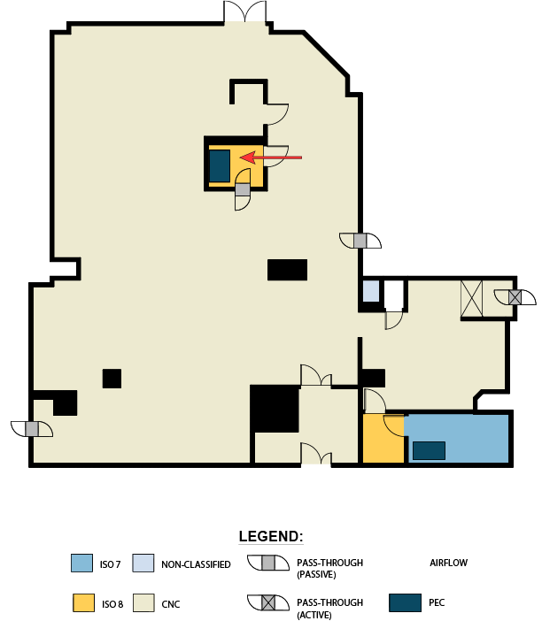
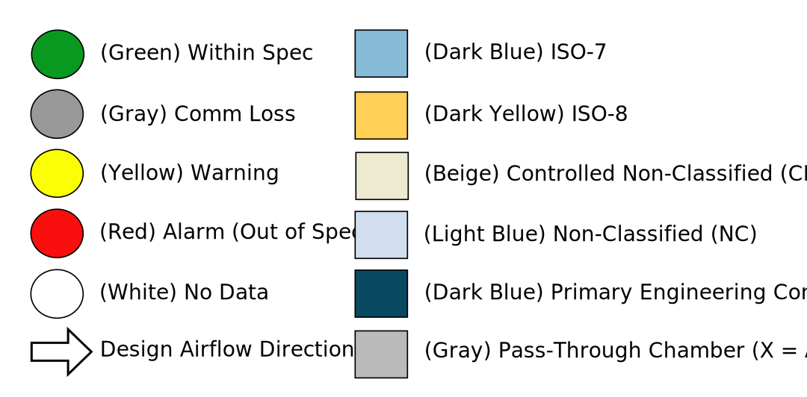

<!-- <div>
  <h2>Background</h2>
  
</div> -->


<svg xmlns="http://www.w3.org/2000/svg" [attr.viewBox]="svgMap.viewbox" [style]="backgroundStyle">
    <defs [innerHtml]="svgMap.defs | sanitizedHtml"></defs>
    <g *ngIf="svgMap.backgroundSvg" id="background" [innerHtml]="svgMap.backgroundSvg | sanitizedHtml"></g>
    <g *ngFor="let pin of svgMap.svgMapPins" [attr.id]="pin.locationId">
      <title>{{pin.title}}</title>
        <a
          class="map-pin"
          data-toggle="tooltip"
          (click)="pinClick.emit(pin.locationId)"
          (mouseover)="pinMouseOver.emit(pin.locationId)"
          (mouseout)="pinMouseOut.emit(pin.locationId)"

        >
          <path *ngIf="pin.path"
            class="pin-path"
            [attr.d]="pin.path"
            [attr.data-locationId]="pin.locationId"
          />
          <circle *ngIf="!pin.path"
            class="pin-border"
            [attr.data-locationId]="pin.locationId"
            [attr.cx]="pin.cx"
            [attr.cy]="pin.cy"
            [attr.r]="pin.r + 5"/>          

          <circle
            [ngClass]="pinClass(pin.locationId)"  
            [attr.cx]="pin.cx"
            [attr.cy]="pin.cy"
            [attr.r]="pin.r"
          />
        </a>
      </g>
</svg>




<script>
  $('[data-toggle="tooltip"]').tooltip();
</script>